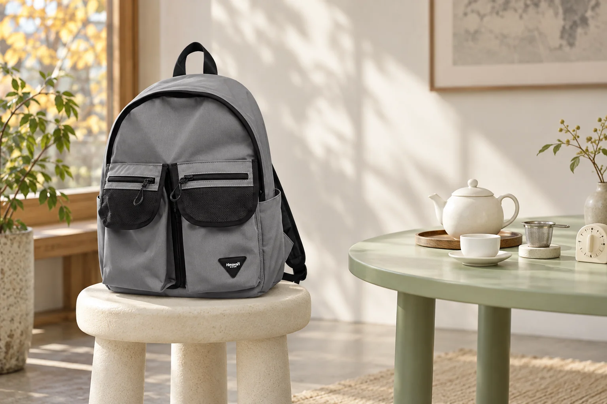

차 모임에 가져갈 작은 타이머: 우리는 시간의 시작 맞추기

차 모임에 작은 타이머를 가져가는 날입니다. 기기만 챙기기 전에 오늘 어떤 차를 우리고 언제 시간을 재기 시작할지 함께 정해보세요. 물을 붓는 사람과 시간을 확인하는 사람이 다르면 각자 생각한 시작이 다를 수 있습니다. 정해진 신호와 제품의 안내를 가까이에 두는 준비가 모임의 대화를 잠깐 멈춰 확인할 기준이 됩니다.
숫자를 정하기 전에 차의 안내 읽기
모든 차에 같은 시간을 적용하기보다 오늘 사용할 제품의 포장 안내를 확인합니다. Twinings의 차 우리기 안내도 물을 차에 부은 뒤 제품에서 권장하는 시간만큼 우리고, 해당 시간은 포장에 적힌 내용을 확인하도록 설명합니다. 모임에서 별도로 정한 방식이 있다면 진행자에게 확인하세요. 이 글에서는 차 종류별 온도나 시간을 하나의 숫자로 제시하지 않습니다. 가져갈 차의 안내를 실제로 읽고 준비하는 순서입니다.
물을 붓는 사람과 시작 신호 맞추기
타이머를 누가 켤지 정하고, 시간을 재기 시작할 순간을 말로 확인합니다. 예를 들어 물을 다 부었다는 말을 들은 뒤 시작하기로 했다면 두 사람이 같은 신호를 알고 있어야 합니다. 타이머를 먼저 켜두고 나중에 주전자를 준비하는 상황과 섞이지 않도록 합니다. 실제 시작 기준은 제품의 안내와 모임의 진행 방식에 맞춰 정하세요. 여러 잔이나 주전자를 준비할 때는 어느 차의 시간을 재고 있는지도 구분합니다.
알림 뒤에 할 일까지 한 번 확인
알림이 울린 다음 무엇을 할지도 미리 이야기합니다. 모임에서 사용하는 방식에 따라 티백이나 거름망을 꺼낼 사람이 누구인지, 뜨거운 도구를 내려놓을 자리는 어디인지 확인하세요. 알림만 끄고 대화를 계속하면 준비해둔 시간이 실제 행동과 연결되지 않을 수 있습니다. 누구의 차를 재던 타이머인지 다시 확인하고 진행자의 안내에 따라 처리합니다. 뜨거운 차를 다루는 동작은 서두르지 않고 테이블 위의 준비된 자리를 사용합니다.
출발 전 타이머를 실제로 켜보기
집에서 짧게 설정해 작동과 알림을 확인하고 멈추는 방법도 눌러봅니다. 스마트폰을 사용할 경우 모임 중 다른 용도로 쓰는 일정과 겹치는지도 생각해보세요. 포장에 적힌 안내를 가져갈 수 있도록 남기고, 타이머를 사용한 뒤에는 다음 차의 시간을 새로 설정했는지 확인합니다. 사진의 No.1230은 회색 몸체와 검정 앞 포켓 덮개, 삼각형 로고를 원본에 맞춰 표현했습니다. 차 도구는 가방 밖의 별도 테이블에 배치했으며 주전자나 뜨거운 용기를 가방에 넣는 사용법을 보여주지 않습니다.
참고·안내
- Himawari No.1230 제품 정보
- Twinings — How to Make a Cup of Tea Perfectly (제품별 우리는 시간 안내)
- 실제 No.1230 그레이 원본과 제조사 카탈로그의 외부 치수 32 × 40 × 18cm(가로 × 세로 × 폭)를 참고한 AI 연출 사진입니다. 가방은 차를 준비하는 테이블과 떨어진 마른 스툴에 놓았으며 실제 모임·고객 후기나 내부 수납 실측 사진이 아닙니다. 측정 방식에 따라 치수 차이가 있을 수 있습니다.
자주 묻는 질문
어떤 차든 같은 시간을 설정하면 되나요?
오늘 사용하는 차의 포장 안내와 모임의 진행 방식을 확인해주세요. 이 글은 차 종류별 우리는 온도나 시간을 일괄적으로 제시하지 않습니다.
타이머를 켜는 순간은 어떻게 정하나요?
제품의 안내와 모임 방식에 맞춰 정한 뒤 물을 붓는 사람과 시간을 재는 사람이 같은 시작 신호를 확인하세요. 알림이 울린 뒤 할 일도 함께 정하면 됩니다.